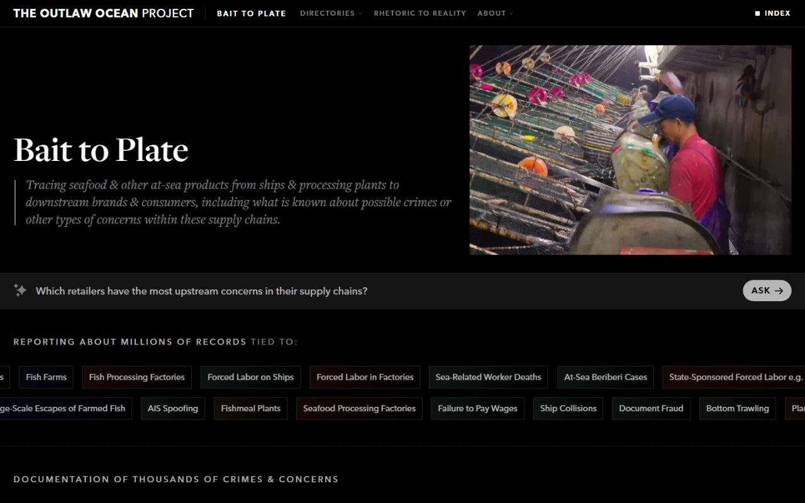

The Outlaw Ocean Project
Bait to Plate
A database that traces seafood from fishing vessel to retail shelf, linking hundreds of thousands of entities across more than 100 countries to documented crimes and labor abuses.
I architected much of the data infrastructure and the machine learning and NLP pipelines. It launched in October 2026 with the Food for Feed investigation and was featured in The New York Times Magazine.